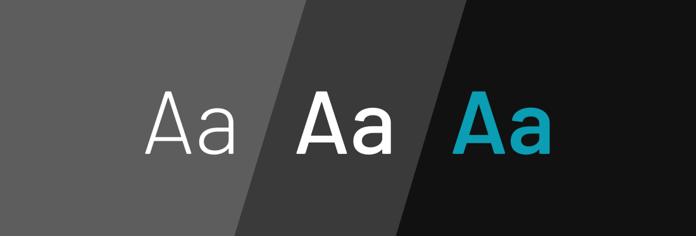

Typography in Design System
Everyday digital interfaces include a rich variety of images,
visualizations and other picture.However,more thean enything else,
they are made of words.Oh so many words.as we equip teams to design
and code usable,consitent,beautiful interfaces using systems,it's
essential that words depend on a strong foundation of typography.
I'll admit,I am not tryoghrapy expert.i lack a graphic design degree.
I'm never the person choosing a font,scaling type,or finessing letter
spacing.AS a result,I've always been reluctant to write about typography.
On the other hand,I am a pattern hunter.Over the years,I've
contributed to many design system that set a foundation for typography.
Each traversed of steps and decisions to set a foundation and apply it to
an emerging library of interface components.This article summarizes
those patterns.
typography starts by setting a foundation of font families and weights
along with fallbacks It then explores how to build hierarchy using size,
color,additional detail like line-hight,and layering responsiveness.
Those models are then applied to components in a system's library (like
Article and header) as well as custom components made by other teams.
Ekstra bilgi, bu video, Photoshop ve diğer grafik tasarım programları için
video dersler hazırlayan Lynda tarafından Photoshop’un 25. Yılını
kutlamak amacıyla hazırlanmış.
Originally published at www.ferdicildiz.net on July 18, 2015.